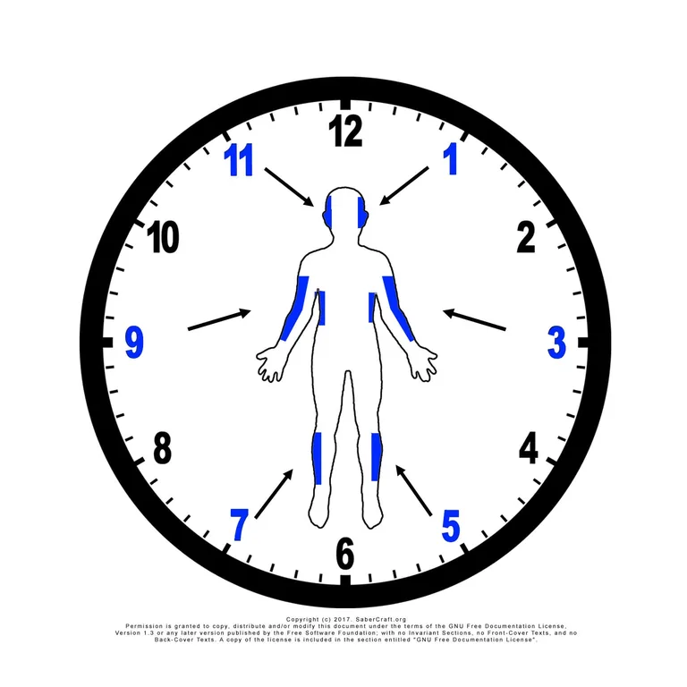
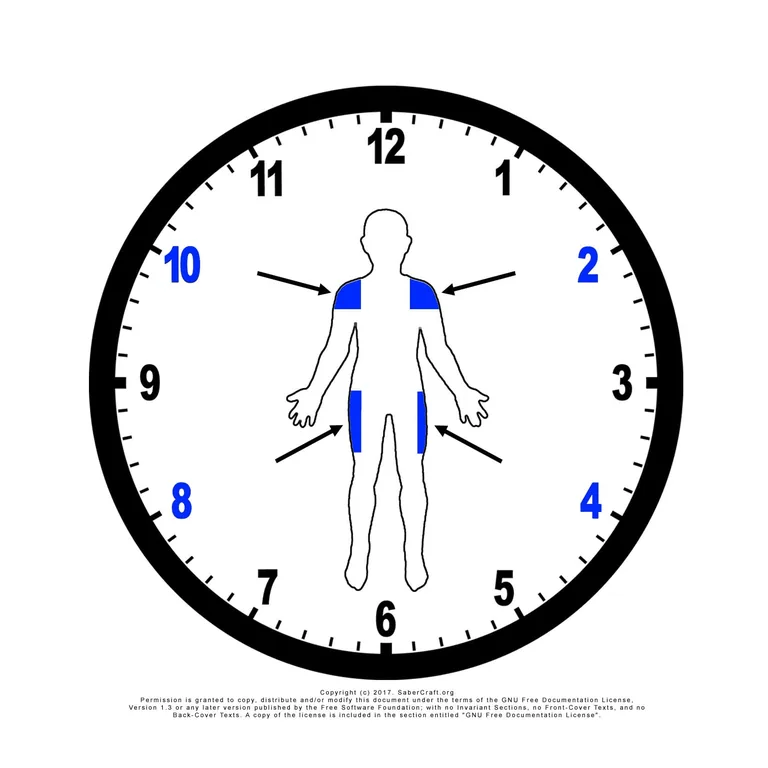
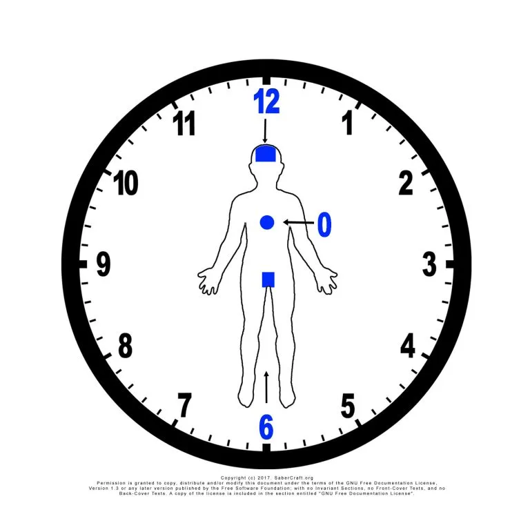
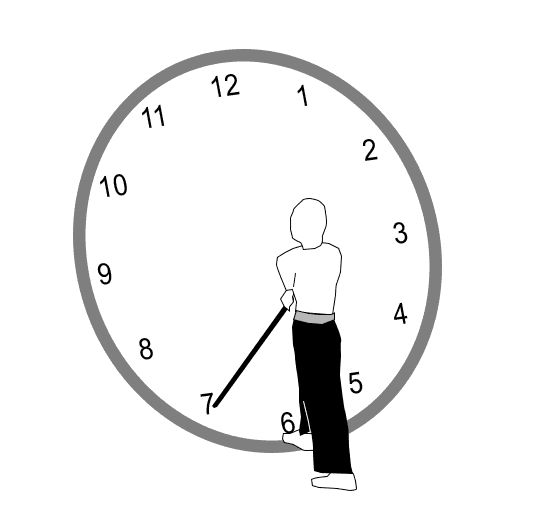
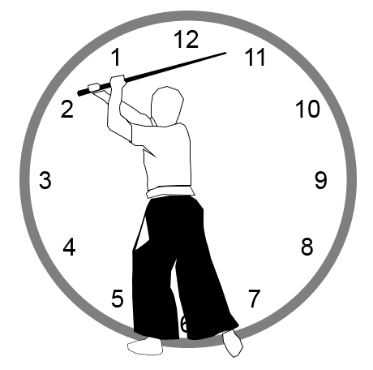

Saber Standard Notation
What to learn first
Do not start by memorizing the full notation legend. Begin with the beginner core — the six beginner target lines, the basic attacks, their matching parries, the two-Saberist table format, and CM-A, the first core movement — which is enough to read and practice your first Saber Standard sequence. The full reference is waiting in the Notation Legend when you need it.
Prefer to watch? — 10 minute lesson

Saber Standard Notation is an open-source weapon combat notation system used for SaberCraft choreographies. It is the written movement language of the Saber Standard, and it helps students, instructors, clubs, schools, and performance groups write choreographed saber movement clearly enough to teach, rehearse, review, and preserve.
Target numbers are named from the attacker's perspective: the clock face sits on the partner, and the number is read from the attacking side. That is a rule about naming lines, and it is the only place the attacker's view is privileged.
The system itself is written for both Saberists. Every movement is notated as two rows of equal standing — each Saberist has their own line, and either may attack or defend at any step. Notation that records only the attacking line can express one thing: a run of attacks answered in turn, one person acting and the other reacting for the whole sequence. That is a monologue, and on the floor it looks staged.
Saber Standard Notation is built to write a duel as a dialogue, where the initiative passes back and forth the way it does in a real exchange. That is what makes it a language rather than a list of targets. CM-D is where a Saberist first meets it directly: the attack changes hands mid-sequence, and both rows are active.
It is also meant to be built with. The choreography is not the standard — the notation language is. Saberists, schools, and clubs use it to write, teach, and share choreography of their own, not only to reproduce SaberCraft's.
Below is a quick overview of how the notation works and the intended target points. Once you understand that, begin learning the Choreography Movements.
The target points
 The 1st six targets |
 The 2nd four targets |
 The 3 deadly shots |
Select any diagram to open it full size in a new tab.
Attacks and parries
The simplest Saber Standard notation uses numbers and the letter P.
| Symbol type | Meaning |
|---|---|
| Number | Attack toward that target line |
Number + P |
Parry against that target line |
| Attack | Matching parry |
|---|---|
1 |
1P |
11 |
11P |
The two-Saberist table
Most beginner Saber Standard sequences are written as a two-row table.
One row belongs to each Saberist. Each column is one step in the choreography.
| Player | Step 1 | Step 2 | Step 3 |
|---|---|---|---|
| Saberist A | 1 | 11 | 3 |
| Saberist B | 1P | 11P | 3P |
Read the table vertically, one column at a time.
- Step 1: Saberist A attacks
1; Saberist B parries1P. - Step 2: Saberist A attacks
11; Saberist B parries11P. - Step 3: Saberist A attacks
3; Saberist B parries3P.
The table keeps both performers connected to the same timing.
Attacking
Picture a clock and place your partner in the middle of that clock. When attacking, you swing the saber so that the tip arrives at the appropriate target point.
When you attack a 1, you are swinging the saber so the tip reaches the 1-o'clock mark, which is around the left side of your partner's head.
In the Saber Standard there is no actual contact, so the saber comes to within six inches of the target and stops there. The key to attacking is controlling your saber so it arrives firmly and accurately at the target point.
While attacking, you step forward with your attacks.
The beginner path uses six target lines:
| Target | Attack | Description | Target | Attack | Description |
|---|---|---|---|---|---|
1 |
 |
High / upper center line | 11 |
High opposite line | |
3 |
 |
Side line | 9 |
Opposite side line | |
5 |
Low line | 7 |
 |
Opposite low line |
These six lines are used in CM-A and give new Saberists a simple starting vocabulary.
For more detail, see Targets.
Defending
Picture a clock. Now mirror it and place yourself in the center of that clock. When defending, imagine that you are the clock. You are positioning your hands at a number on the clock.
As in many martial arts, defending is more difficult than attacking. Hold your saber firmly, and remind your partner to attack a particular target point with accuracy, focusing on meeting your blade, not your body.
While defending, you step backward with your defended attack.
Each attack line has a matching parry:
| Parry | Defense | Description | Parry | Defense | Description |
|---|---|---|---|---|---|
1P |
 |
High / upper center line | 11P |
 |
High opposite line |
3P |
Side line | 9P |
Opposite side line | ||
5P |
Low line | 7P |
Opposite low line |
For more detail, see Parries.
First complete example: CM-A
CM-A is the first official core movement sequence.
| Player | Step 1 | Step 2 | Step 3 | Step 4 | Step 5 | Step 6 |
|---|---|---|---|---|---|---|
| Saberist A | 1 | 11 | 3 | 9 | 5 | 7 |
| Saberist B | 1P | 11P | 3P | 9P | 5P | 7P |
The choreography above states the following:
- Saberist A attacks their partner's 1-o'clock target; Saberist B parries the attack.
- Saberist A attacks their partner's 11-o'clock target; Saberist B parries the attack.
- Saberist A attacks their partner's 3-o'clock target; Saberist B parries the attack.
- Saberist A attacks their partner's 9-o'clock target; Saberist B parries the attack.
- Saberist A attacks their partner's 5-o'clock target; Saberist B parries the attack.
- Saberist A attacks their partner's 7-o'clock target; Saberist B parries the attack.
CM-A teaches the basic attack/parry relationship across the six beginner lines.
For the full teaching page, see CM-A.
Beyond attacks and parries
Attacks and parries are only the beginning. Saber Standard Notation also records blade contact, body movement, grip, footwork, and flourishes, so a written sequence can describe a whole exchange rather than just where the saber goes.
A few examples:
| Symbol | Meaning |
|---|---|
© |
Complete |
B |
Bash |
Ig |
Inverted grip |
K |
Kick |
D |
Duck |
St-B |
Step back |
Fl-Rev |
Reverse flourish (saber spin) |
These are a sample. The Notation Legend holds the full vocabulary.
Next steps
Moving to the next stage means becoming part of the community. This is about building groups so you can practice, learn, and grow with others.
As a Saberist, you learn the system, memorize the Choreography Movements, then build your own choreographies and a community to share them with.
- Continue to the next lesson: CM-B
- Browse the full catalog at the CM Series Catalog
- See the Downloads page for the instructional guide
What notation does not replace
Notation is powerful, but it does not replace live teaching.
A notation table may not fully show:
- speed
- distance
- acting intention
- emotional tone
- exact footwork
- safety adjustments
- camera angle or staging
Use notation with instruction, rehearsal, video, or coaching when needed.
A note on the name
The system carried several names during its development, including the Temporal Notation System, the LUMINA Notation System, and the SaberCraft Notation System. It is now the Saber Standard Notation System, for clarity and ease of adoption. Older material may still use the earlier names; they all refer to the same notation.